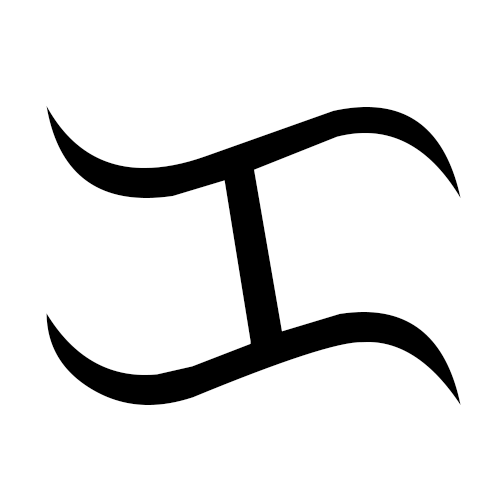

Split-check iOS App
iOS App Store LinkiOS App for splitting bills between numerous people. Supports tip calculation and saved contact lists.
Skills: Swift, UI/UX Design, App Development, Data Structures Design, Software Engineering.

Baybayin Classifier 🇵🇭
GitHub Project RepositoryConvolutional Neural Net for Identifying Traditional Tagalog Baybayin Characters.
Skills: Tensorflow, Keras, Image Classification, ML Design
Photosensitive Epilepsy Risk Detection Script
GitHub Project RepositoryPython script for detecting visual patterns known to be common triggers for photosensitive epilepsy.
Skills: OpenCL, PIL, Python, Video Analysis.